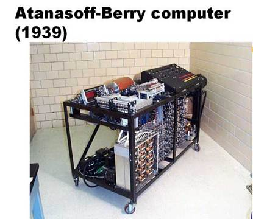
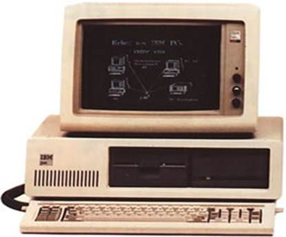
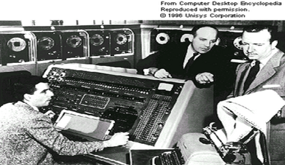
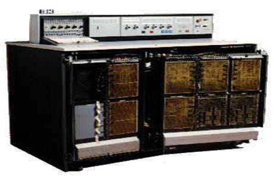
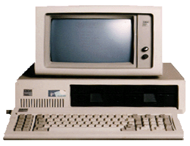
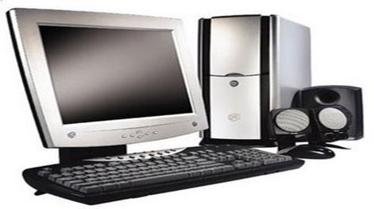

Generaciones da la informática
La aparición de la Informática se ha debido a la gran demanda de información que tenemos a nuestra disposición y a la dificultad para manejarla personalmente.
Un ordenador es una máquina capaz de manipular datos y proporcionar resultados, siguiendo una serie de instrucciones. Debido a los rápidos avances en el mundo de la electrónica, sobre todo a partir de 1946, los ordenadores se clasifican por generaciones. Cada una de estas generaciones se caracteriza por los componentes que forman parte de un ordenador.

1° generación: Abarca desde 1946 hasta 1957 y se caracteriza porque todos los ordenadores que pertenecen a ella estaban construidos por medio de válvulas electrónicas y tubos de vacío. Estos ordenadores eran de gran tamaño, muy pesados, consumían mucha energía y se averiaban con bastante frecuencia. Los datos les eran proporcionados por medio de fichas o cintas perforadas y se dedicaban, fundamentalmente, al cálculo científico. El lenguaje que se utilizaba para comunicarse con este tipo de ordenadores era lenguaje máquina. El ordenador más conocido fue el ENIAC.
La computadora de la primera generación empleó bulbos para proceder información. Los operadores ingresaban los datos y programas en código especial por medio de tarjetas perforadas. El almacenamiento se lograba con un tambor que giraba rápidamente, sobre el cual un dispositivo de lectura/escritura colocaba marcas magnéticas. Esas computadoras de bulbos eran mucho más grandes y generaban más calor que los modelos contemporáneos. Eckert y mauchly contribuyeron al desarrollo de computadoras de la primera generación formando una compañía privada y constituyendo UNIVAC I, que el comité de censo utilizo para evaluar el censo de 1950

2ª Generación: Pertenecen
a esta los ordenadores desarrollados desde 1958 a 1964.En estos ordenadores los
circuitos estaban hechos de transistores y la memoria de núcleos de ferrita. Este
hecho hizo que los ordenadores fueran mucho más pequeños que los construidos
hasta ese momento, tuvieran menos consumo y fueran capaces de ejecutar
alrededor de 10 millones de operaciones por minuto. Los datos para estos
ordenadores eran suministrados por medio de cintas magnéticas y se utilizaba
lenguajes simbólicos, tipo FORTRAN y COBOL. Comienzan a utilizarse para tareas
administrativas y admiten algo de trabajo en cadena. El primer ordenador de
esta generación fue el TRADIC de los Laboratorios Bell.
El invento del
transistor hizo posible una nueva Generación de computadoras, más rápidas, más
pequeñas y con menores necesidades de ventilación. Sin embargo el costo seguía
siendo una porción significativa del presupuesto de una Compañía. Las
computadoras de la segunda generación también utilizaban redes de núcleos
magnéticos en lugar de tambores giratorios para el almacenamiento primario.
Estos núcleos contenían pequeños anillos de material magnético, enlazados entre
sí, en los cuales podían almacenarse datos e instrucciones.

-3ª
Generación-
Se incluyen aquí los ordenadores que aparecieron entre 1965 y 1971.Estos
contienen circuitos integrados o chips y dieron lugar a la microelectrónica, es
decir, el desarrollo de componentes electrónicos de tamaño microscópico. Con
esa nueva tecnología, la velocidad de los ordenadores llegó a ser de alrededor
de 100 millones de operaciones por segundo, y se consiguió un menor tamaño en
los mismos. Los avances de esta tercera generación dan paso al multiproceso, es
decir a la capacidad de realizar varios procesos a la vez; y a los lenguajes de
programación.
Las
computadoras de la tercera generación emergieron con el desarrollo de los
circuitos integrados (pastillas de silicio) en las cuales se colocan miles de
componentes electrónicos, en una integración en miniatura. Las computadoras
nuevamente se hicieron más pequeñas, más rápidas, desprendían menos calor y
eran energéticamente más eficientes.
El descubrimiento en
1958 del primer Circuito Integrado (Chip) por el ingeniero Jack S. Kilby
(nacido en 1928) de Texas Instruments, así como los trabajos que realizaba, por
su parte, el Dr. Robert Noyce de Fairchild Semiconductors, acerca de los
circuitos integrados, dieron origen a la tercera generación de computadoras.
Antes del advenimiento
de loscircuitos integrados, las computadoras estaban diseñadas para
aplicaciones matemáticas o de negocios, pero no para las dos cosas. Los
circuitos integrados permitieron a los fabricantes de computadoras incrementar
la flexibilidad de los programas, y estandarizar sus modelos.

-4ª Generación: va
desde 1972 a 1981 y se caracteriza por la aparición de los circuitos integrados
a gran escala, es decir, más evolucionados. Los nuevos ordenadores ya no sólo
son utilizados en las grandes empresas, sino que se utilizan de forma personal.
Son más pequeños, más baratos e incorporan la posibilidad de utilizar
diferentes programas para diferentes aplicaciones.
Aparecen los
microprocesadores que es un gran adelanto de la microelectrónica, son circuitos
integrados de alta densidad y con una velocidad impresionante. Las
microcomputadoras con base en estos circuitos son extremadamente pequeñas y
baratas, por lo que su uso se extiende al mercado industrial. Aquí nacen las
computadoras personales que han adquirido proporciones enormes y que han
influido en la sociedad en general sobre la llamada "revolución
informática".
-5ª Generación
Se incluyen en éste todos los ordenadores desarrollados a partir de
1981.Estos ordenadores siguen utilizando circuitos integrados, pero son de una
gran velocidad. Es en esta generación en la que han aparecido los ordenadores
personales. En esta generación de ordenadores ha dado comienzo el desarrollo de
la inteligencia artificial, es decir, las investigaciones con el fin de diseñar
ordenadores que sean capaces de desarrollar determinadas funciones del cerebro
humano.
En vista de la acelerada marcha de la microelectrónica, la sociedad industrial se ha dado a la tarea de poner también a esa altura el desarrollo del software y los sistemas con que se manejan las computadoras. Surge la competencia internacional por el dominio del mercado de la computación, en la que se perfilan dos líderes que, sin embargo, no han podido alcanzar el nivel que se desea: la capacidad de comunicarse con la computadora en un lenguaje más cotidiano y no a través de códigos o lenguajes de control especializados.
Japón lanzó en 1983 el llamado "programa de la quinta generación de computadoras", con los objetivos explícitos de producir máquinas con innovaciones reales en los criterios mencionados. Y en los Estados Unidos ya está en actividad un programa en desarrollo que persigue objetivos semejantes, que pueden resumirse de la siguiente manera:
ºSe desarrollan las microcomputadoras, o sea, computadoras personales o PC.
ºSe desarrollan las supercomputadoras.

Por ultimo terminamos con la computadora que usamos a diario en nuestras vidas
Por último terminamos con la computadora que usamos a diario en nuestras vidas:

{kind=link}